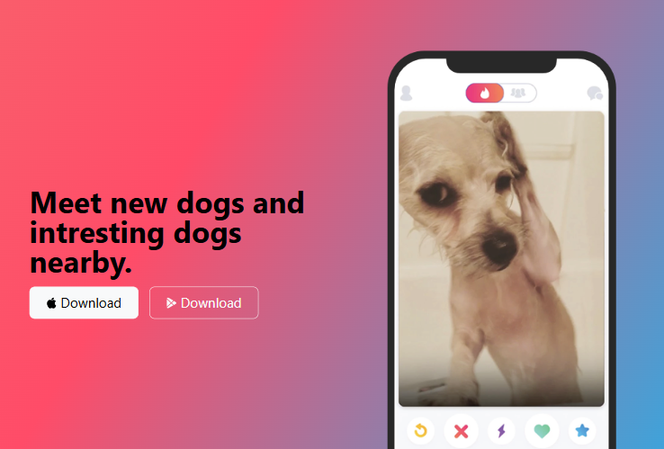

Engineering Artifacts
Featured Projects
A breakdown of command-line tools, web apps, and interfaces I've built with an emphasis on structure and clean design.
CLI / Systems
C
Algorithms
SafePath
A pure C, terminal-based application designed as a reliable, safety-focused routing tool engineered for the standard command-line interface.

Frontend
HTML5
CSS3
Responsive
TinDog
A responsive, single-page landing interface designed as a playful, modern parody of dating apps with mobile-first layouts.
Looking for more source code?
I frequently push algorithm implementations, system utilities, and practice builds on GitHub.